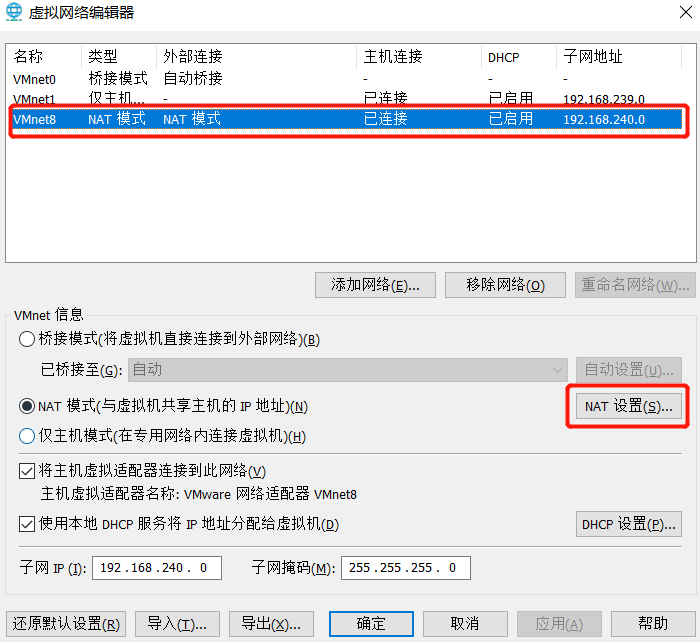

Xshell、Idea与虚拟机Ubuntu连接
一、安装 Ubuntu 虚拟机
默认VMware的网路是NAT模式，保持不变即可。获取宿主机以及虚拟机 IP 地址。
二、建立 IP 映射
将宿主机和虚拟机的IP映射起来。
打开VMware的虚拟网络编辑器（编辑>虚拟网络编辑器）：
选择 VMnet8 ，点击更改设置

选择 VMnet8 ，点击 NAT 设置
点击添加

- 主机端口，填写默认 22 即可
- 填入之前查到的虚拟机 IP 地址
- 虚拟机端口，填写默认的 22 即可
相当于将 宿主机 IP （192.168.80.106:22） 与虚拟机 IP （192.168.240.129:22) 建立起了映射关系。
三、配置虚拟机SSH
- 安装openssh-client：sudo apt-get install openssh-client
- 安装openssh-server：sudo apt-get install openssh-server
- 启动ssh-server：sudo /etc/init.d/ssh restart
- 确认ssh-server工作正常：netstat -tpl （看到ssh表示工作正常）
四、配置虚拟机防火墙
启用22端口并重启防火墙：
1 | firewall-cmd --permanent --add-port=22/tcp |
或者直接关闭防火墙：
1 | systemctl stop firewalld.service |
五、使用 shell 连接虚拟机
六、配置 Idea 连接虚拟机
在 Idea 上面点击如下菜单：Tools—Deployment—Configuration…
新增一台虚拟机，输入名称，选择SFTP协议，输入IP地址、代码路径、账号密码，点击OK
点击Tools—Deployment—Browse RemoteHost
右侧会出现对应的代码路径，修改完代码之后，可以点击右上角的upload图标，将代码上传到虚拟机
点击Tools—Start SSH session…可以打开远程界面
结语
这样就可以在宿主机连接到虚拟机进行代码编辑，并且上传了。